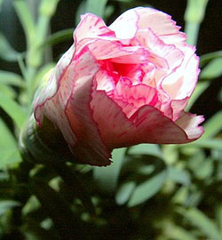
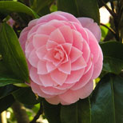
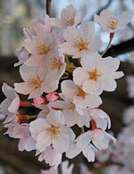
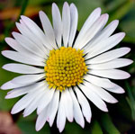
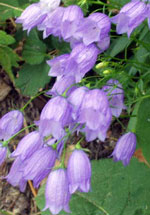

Buy your favourite flowers online now!
We provide you with many different types of beatuiful flowers. Get it sent at your door with free shipping.
Carnation

A long lasting flower. A popular flower for Valentine’s Day and mother’s day. Could be used in boutonnieres, corsages, and bouquet with a variety of many different colours.
Colour Options and Price for Bouquet
- Pink Price: 150Baht
- Red Price: 170Baht
- Yellow Price: 350Baht
- Blue Price: 150Baht
Order Here
Camellias

Camellias, commonly found in Eastern and Southern Asia. They grow in small trees up to 20m tall. Glossy, thick and simple leaves with large, bright flowers is the charm of this plant.
Colour Options and Price for Bouquet
- Pink Price: 180Baht
- Red Price: 150Baht
- YellowPrice: 190Baht
- White Price: 220Baht
Order Here
Cherry Blossom

Cherry Blossom is an extremely fragrant flowe with light pink flower petals. It is a traditional Japanese flower. The petals are sometimes enjoyed in the culinary field as well as for viewing.
Species Options and Price for Bouquet
- Afterglow Cherry Price: 200Baht
- Akebono Cherry Price: 180Baht
- Autmn Flower Cherry Price: 160Baht
- Fugenzo Cherry Price: 210Baht
Order Here
Daisy

Daisies are a simple, yet sophisticater flowers that comes in many different colours. It has a symbol of innocence and purity. It is a great gift for family, and friends!
Colour Options and Price for Bouquet
- White Price: 150Baht
- Pink Price: 140Baht
- Red Price: 160Baht
- Purple Price: 180Baht
Order Here
Bell Flower

Bell flowers, also known as campanula has a very small flower that comes in shapes resembling a bell. It has large, broad leaves at the base of the stem and smaller, narrowwer leaves higher up.
Color Options and Price for Bouquet
- Light Blue Price: 120Baht
- Dark Blue Price: 100Baht
- Pink Price: 90Baht
- Yellow Price: 110Baht
Order Here